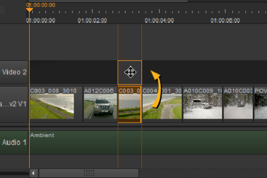

You can add empty tracks to existing timelines or import other EDL, AAF, or XML edits - effectively another sequence within the timeline.
To import EDL, AAF, or XML edits:
| 1. | Select the required sequence in the project bin, right-click, and select Import > New Track(s) from EDL/XML, |
OR
| 2. | Click Import Track in the spreadsheet tab. |
| 3. | Use the browser to locate the EDL, AAF, or XML files, select the file(s) and click Open to import the sequence. |
NOTE: If you’re importing EDLs, bear in mind that there is no guaranteed frame rate information included in the file. Select the correct frame rate then click OK in the dialog supplied.
| 4. | Conform the new track as described in Conforming Sequences. |
To add new tracks:
• Drag-and-drop a clip above or below existing tracks as shown,

OR
• Right-click in the timeline and select New Track > New Video Track or New Audio Track.
NOTE: You can also collapse and expand existing tracks using the right-click Editorial menu, and resize the track header to accommodate longer track names.
|
|